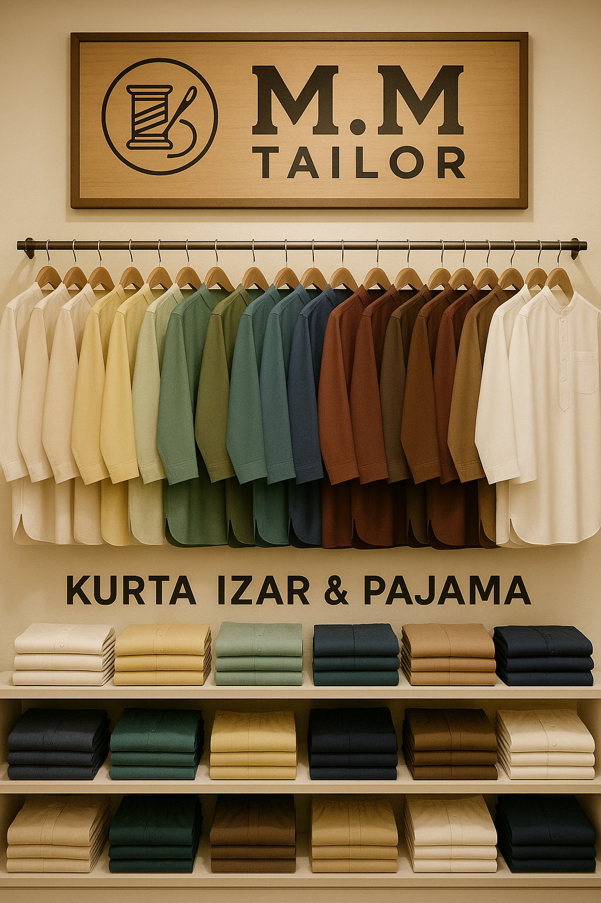
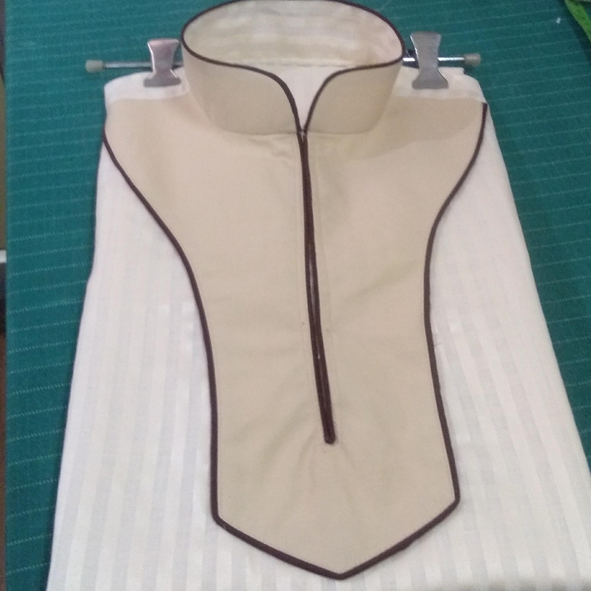

M.M TAILOR
"Stitching Trust Since Day One"
"Chhoti Baat Nahi Hai Silai,
M.M Tailor Ka Hai Ye Karobaar
Purani Rivaayat Se Chali Aayi
– Since 2005."
Welcome to M.M Tailor! We've been tailoring clothes with care and precision since 2005. We specialize in traditional wear like kurta, izar, pajama, waistcoats (koti), and sherwanis — all custom-stitched to fit you perfectly.

"Our shop has been serving satisfied customers since 2005. Once you try our tailoring,
you’ll keep coming back."
About Us